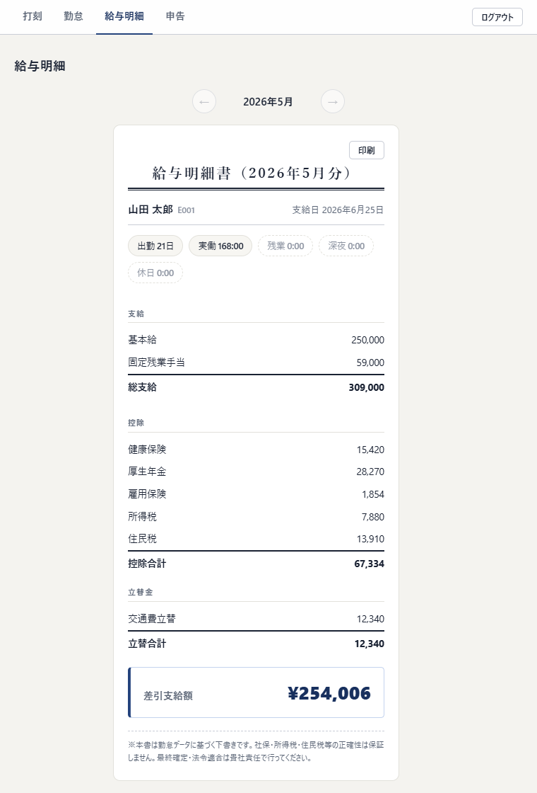
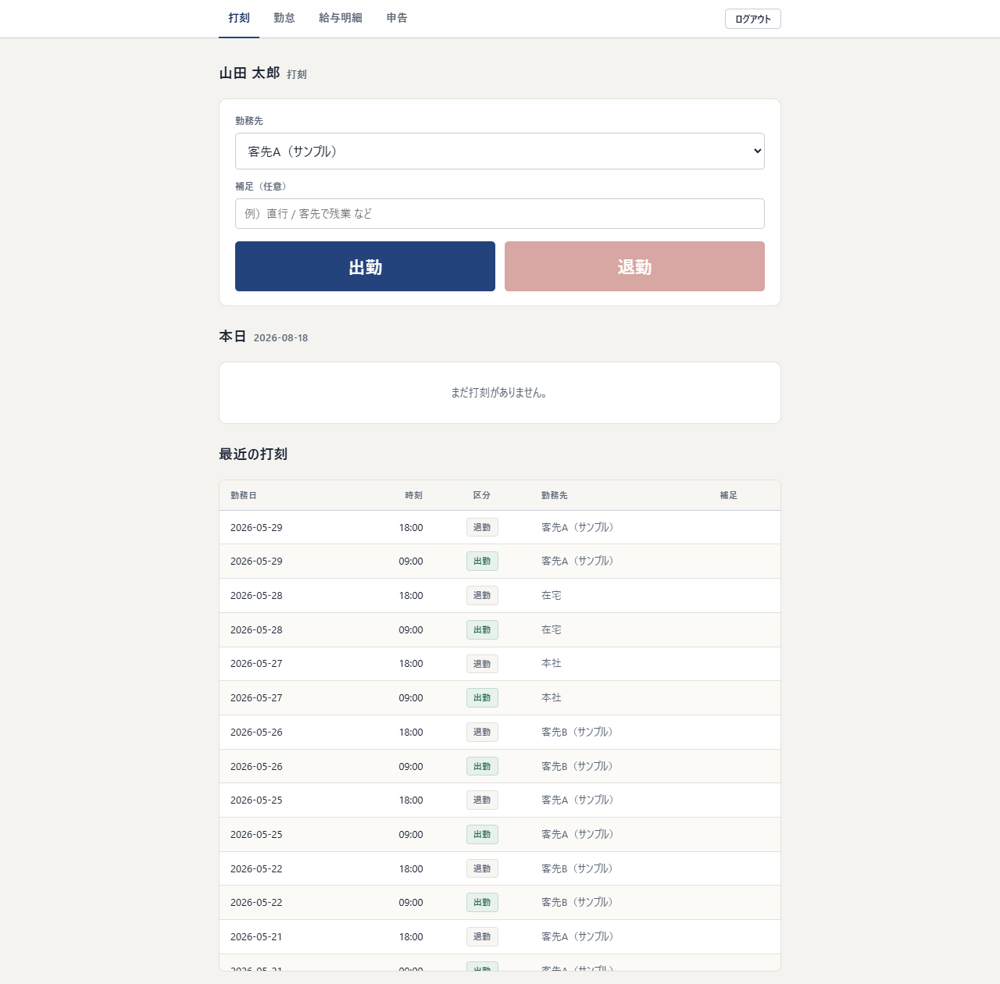
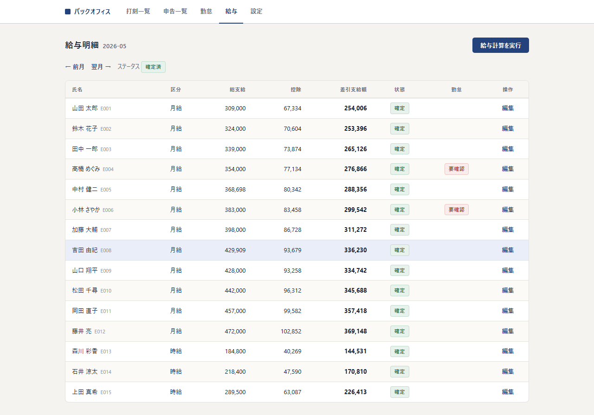

勤怠・給与のバックオフィスSaaS
打刻から勤怠の集計、給与明細の確定と本人への公開までを、ひとつづきの流れとして扱う業務システムです。
動かして試す
デモ環境を公開しています。データはすべて架空で、どなたでも自由に操作できます。
ログイン情報（デモ用に公開しているものです）:
- 従業員: 従業員コード
E001/ PIN1234— 給与明細・打刻・申告を試せます - 管理者: メール
demo@fozu.jp/ パスワードfozu-demo-2026— 勤怠マトリクスの確認、給与明細の編集と確定を試せます
氏名・金額はすべて架空のデモデータです。打刻や明細の確定も自由に操作してかまいません（デモデータは不定期に初期状態へ戻します）。
概要
経理として給与計算に関わるなかで、打刻・勤怠・給与がそれぞれ別の道具に分かれていることが手戻りの原因になっていると感じました。そこで、打刻した記録がそのまま日々の勤怠に積み上がり、その月を締めるとその数字から給与明細の下書きが起きる、という流れをそのまま画面にしています。
複数の利用先が同じ仕組みを使うことを前提に、データベースの行単位でテナントを分ける構成を最初から入れました。控除のように人が判断する部分は手入力に残し、機械が確実に出せる部分だけを自動計算しています。
主な機能
- 打刻 — 勤務先と補足を添えて出勤・退勤を記録します。打刻は追記だけで上書きせず、送信ごとの識別子に一意制約を掛けて、通信のやり直しで二重に届いた打刻を1件として吸収します。
- 勤怠集計 — 実働と残業を1分単位・丸めなしで集計し、深夜と法定休日を区分します。打刻漏れ・24時間を超える勤務・6時間超で休憩なし・日跨ぎなど9種類のフラグを自動で付け、要確認の日を洗い出します。月次を確定すると編集できなくなり、必要なら再オープンできます。
- 給与明細 — 月給と時給それぞれの割増（残業1.25・法定休日1.35・深夜0.25）で下書きを作ります。控除は手入力で確定し、確定した明細だけが本人の画面に出ます。印刷用の表示も用意しています。
- 固定残業の下限チェック — 固定残業手当が、その固定残業時間に対する労働基準法37条の割増額を下回る場合に、金額を書き換えずに「不足」として示します。
- 申告と承認 — 打刻漏れや時刻の修正を本人が申告し、管理者が承認すると勤怠へ反映されます。証跡の画像も添付できます。
- マルチテナント — 単一のデータベースに全テーブルのテナントIDを持たせ、PostgreSQLのRow Level Securityで行単位に分離しています。アプリからのデータベース操作は、必ず権限を落としたロールに切り替えてから実行します。
- 監査の記録 — 給与明細の確定・再オープン・編集は履歴として残ります。金額はすべて整数の円で扱い、浮動小数点数を使いません。
技術と検証
画面とサーバー処理はNext.js 16のApp RouterとServer Actionsにまとめ、React 19とTypeScriptで書いています。データベースはPostgreSQL 16で、スキーマとマイグレーションはDrizzle ORMで管理しています。CSSはフレームワークを使わず自分で書いています。
勤怠の集計と給与の計算は、データベースに依存しない純粋な関数として切り出しました。おかげで、打刻の並びを入力すれば日次・週次・月次の結果が返る形になり、テストから直接呼べます。
テストはVitestで31ファイル・350件が全て通っています。関数単体の検証だけでなく、実際のPostgreSQLに接続して、Row Level Securityがテナントをまたいだ読み取りを止めること、同じ打刻を二重に送っても1件になることも確認しています。ソースは約8,000行、テストは約5,200行です。
経費の取り込みと会計（仕訳・元帳）は、モジュールとして追加する計画はありますが現時点では未実装です。このページに書いた機能は、実際に動かして確認できたものだけを載せています。
画面
-

従業員が見る給与明細。確定した月の明細だけが本人の画面に出ます。月めくりで過去の月もたどれます。 -

管理者の勤怠マトリクス。従業員×日で実働と残業を並べ、要確認の日には印が付きます。月次を確定するとその月は編集できなくなります。 -

従業員の打刻。勤務先と補足を選んで出勤・退勤を記録し、その下に本日と最近の打刻が並びます。 -

月次の給与明細一覧。総支給・控除・差引支給額と状態を並べ、ここから給与計算を実行します。
画面はすべて架空のデモデータです。
制作実績へ戻る